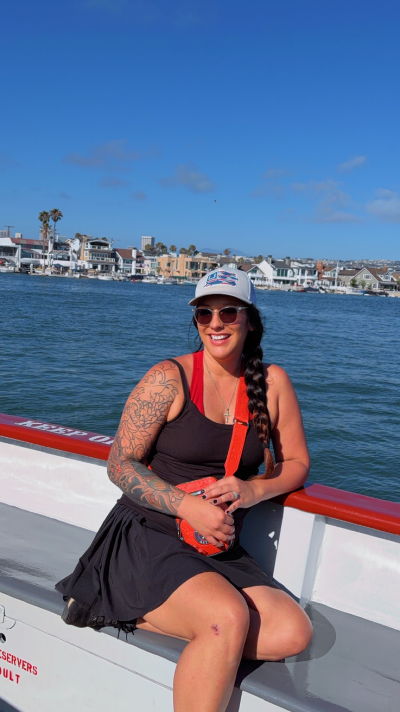

Warehouse Management
Managed inventory, coordinated vendors, tracked materials, and maintained documentation while supporting industrial projects.
Warehouse Professional | Future Cybersecurity Specialist | Web Development Student

Hello! My name is Kali Crank, and I am from Brazoria, Texas. I enjoy spending time outdoors, hiking, traveling, and exploring beautiful places like beaches and mountain overlooks.
Professionally, I have experience in warehouse management, purchasing, correctional services, environmental control, and industrial construction. Every position has strengthened my leadership, teamwork, organization, communication, and problem-solving abilities.
Today I am pursuing web development while preparing for a future career in cybersecurity where I hope to protect organizations from cyber threats and continue learning new technologies.
Managed inventory, coordinated vendors, tracked materials, and maintained documentation while supporting industrial projects.
Created purchase orders, communicated with vendors, processed invoices, used SAP, and managed purchasing for multiple industrial facilities.
My industrial and correctional experience taught me responsibility, safety awareness, leadership, communication, and teamwork.
My goal is to become a cybersecurity professional by continuing my education, earning certifications, and gaining hands-on experience securing computer systems and networks.
Lumberton High School Graduate and current student at Campus University for Cybersecurity
Procurement Management, Metal Fabrication, Certified Payroll Reports, Laborers, Document Management, Timesheet, Solar Power, Technology Management, Safety Awareness, Pipefitting, Environmental Control, Construction Clean-up, Program Monitoring, Tracking Budget Expenses, Department Coordination, Vendor Relations, Team Effectiveness, Racking, Welding, Vendor Management, Quality Control, Lifting Operations, Heavy Lift Operation, Timekeeping, Working with Procurement Professionals, Blotting, Labor and Employment Law, Rigging, Import/Export Operations, Coatings, Piping, Rentals, Warehouse Operations, Confined Space, Commitment towards work, Cost Savings, Manufacturing, Procurement Outsourcing, Safeguarding, Records Management, Bartending, Skilled Labor, Craftsmanship, SAP Materials Management (SAP MM), Microsoft SQL Server, Microsoft Office, Team Leadership, Risk awareness, Logistics and operations, Safety Compliance, Documentation, Microsoft Excel, Inventory Management, Vendor Coordination, Cybersecurity in progress, Security Operations, Information Technology.
Thank you for visiting my personal portfolio. Feel free to reach out as I continue growing as a web developer and future cybersecurity professional.
Email: kali_whitehead@yahoo.com